This chapter introduces key concepts of the thread organization and thread-to-data mapping in CUDA. It first gives an overview of the multidimensional organization of CUDA threads, blocks, and grids. It then elaborates on the use of thread indexes and block indexes to map threads to different parts of the data, which is illustrated with a two-dimensional (2D) image color-to-grayscale conversion example and a 2D image blur example. The chapter concludes with a matrix multiplication example that will be used extensively in later parts of the book.
Kernel execution configuration parameters; multidimensional arrays; multidimensional grids; linearization; multidimensional blocks; row-major layout; column-major layout; thread-data mapping; matrix multiplication; inner product
In Chapter 2, Heterogeneous Data Parallel Computing, we learned to write a simple CUDA C++ program that launches a one-dimensional grid of threads by calling a kernel function to operate on elements of one-dimensional arrays. A kernel specifies the statements that are executed by each individual thread in the grid. In this chapter, we will look more generally at how threads are organized and learn how threads and blocks can be used to process multidimensional arrays. Multiple examples will be used throughout the chapter, including converting a colored image to a grayscale image, blurring an image, and matrix multiplication. These examples also serve to familiarize the reader with reasoning about data parallelism before we proceed to discuss the GPU architecture, memory organization, and performance optimizations in the upcoming chapters.
In CUDA, all threads in a grid execute the same kernel function, and they rely on coordinates, that is, thread indices, to distinguish themselves from each other and to identify the appropriate portion of the data to process. As we saw in Chapter 2, Heterogeneous Data Parallel Computing, these threads are organized into a two-level hierarchy: A grid consists of one or more blocks, and each block consists of one or more threads. All threads in a block share the same block index, which can be accessed via the blockIdx (built-in) variable. Each thread also has a thread index, which can be accessed via the threadIdx (built-in) variable. When a thread executes a kernel function, references to the blockIdx and threadIdx variables return the coordinates of the thread. The execution configuration parameters in a kernel call statement specify the dimensions of the grid and the dimensions of each block. These dimensions are available via the gridDim and blockDim (built-in) variables.
In general, a grid is a three-dimensional (3D) array of blocks, and each block is a 3D array of threads. When calling a kernel, the program needs to specify the size of the grid and the blocks in each dimension. These are specified by using the execution configuration parameters (within <<<…>>>) of the kernel call statement. The first execution configuration parameter specifies the dimensions of the grid in number of blocks. The second specifies the dimensions of each block in number of threads. Each such parameter has the type dim3, which is an integer vector type of three elements x, y, and z. These three elements specify the sizes of the three dimensions. The programmer can use fewer than three dimensions by setting the size of the unused dimensions to 1.
For example, the following host code can be used to call the vecAddkernel() kernel function and generate a 1D grid that consists of 32 blocks, each of which consists of 128 threads. The total number of threads in the grid is 128*32=4096:
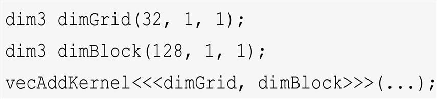
Note that dimBlock and dimGrid are host code variables that are defined by the programmer. These variables can have any legal C variable name as long as they have the type dim3. For example, the following statements accomplish the same result as the statements above:
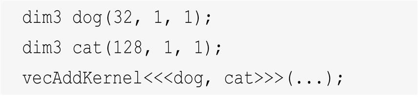
The grid and block dimensions can also be calculated from other variables. For example, the kernel call in Fig. 2.12 can be written as follows:
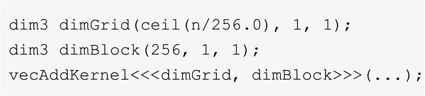
This allows the number of blocks to vary with the size of the vectors so that the grid will have enough threads to cover all vector elements. In this example the programmer chose to fix the block size at 256. The value of variable n at kernel call time will determine dimension of the grid. If n is equal to 1000, the grid will consist of four blocks. If n is equal to 4000, the grid will have 16 blocks. In each case, there will be enough threads to cover all the vector elements. Once the grid has been launched, the grid and block dimensions will remain the same until the entire grid has finished execution.
For convenience, CUDA provides a special shortcut for calling a kernel with one-dimensional (1D) grids and blocks. Instead of using dim3 variables, one can use arithmetic expressions to specify the configuration of 1D grids and blocks. In this case, the CUDA compiler simply takes the arithmetic expression as the x dimensions and assumes that the y and z dimensions are 1. This gives us the kernel call statement shown in Fig. 2.12:
Readers who are familiar with C++ would realize that this “shorthand” convention for 1D configurations takes advantage of how C++ constructors and default parameters work. The default values of the parameters to the dim3 constructor are 1. When a single value is passed where a dim3 is expected, that value will be passed to the first parameter of the constructor, while the second and third parameters take the default value of 1. The result is a 1D grid or block in which the size of the x dimension is the value passed and the sizes of the y and z dimensions are 1.
Within the kernel function, the x field of variables gridDim and blockDim are preinitialized according to the values of the execution configuration parameters. For example, if n is equal to 4000, references to gridDim.x and blockDim.x in the vectAddkernel kernel will result in 16 and 256, respectively. Note that unlike the dim3 variables in the host code, the names of these variables within the kernel functions are part of the CUDA C specification and cannot be changed. That is, the gridDim and blockDim are built-in variables in a kernel and always reflect the dimensions of the grid and the blocks, respectively.
In CUDA C the allowed values of gridDim.x range from 1 to 231 − 1,1 and those of gridDim.y and gridDim.z range from 1 to 216 − 1 (65,535). All threads in a block share the same blockIdx.x, blockIdx.y, and blockIdx.z values. Among blocks, the blockIdx.x value ranges from 0 to gridDim.x-1, the blockIdx.y value ranges from 0 to gridDim.y-1, and the blockIdx.z value ranges from 0 to gridDim.z-1.
We now turn our attention to the configuration of blocks. Each block is organized into a 3D array of threads. Two-dimensional (2D) blocks can be created by setting blockDim.z to 1. One-dimension blocks can be created by setting both blockDim.y and blockDim.z to 1, as in the vectorAddkernel example. As we mentioned before, all blocks in a grid have the same dimensions and sizes. The number of threads in each dimension of a block is specified by the second execution configuration parameter at the kernel call. Within the kernel this configuration parameter can be accessed as the x, y, and z fields of blockDim.
The total size of a block in current CUDA systems is limited to 1024 threads. These threads can be distributed across the three dimensions in any way as long as the total number of threads does not exceed 1024. For example, blockDim values of (512, 1, 1), (8, 16, 4), and (32, 16, 2) are all allowed, but (32, 32, 2) is not allowed because the total number of threads would exceed 1024.
A grid and its blocks do not need to have the same dimensionality. A grid can have higher dimensionality than its blocks and vice versa. For example, Fig. 3.1 shows a small toy grid example with a gridDim of (2, 2, 1) and a blockDim of (4, 2, 2). Such a grid can be created with the following host code:
The grid in Fig. 3.1 consists of four blocks organized into a 2×2 array. Each block is labeled with (blockIdx.y, blockIdx.x). For example, block (1,0) has blockIdx.y=1 and blockIdx.x=0. Note that the ordering of the block and thread labels is such that highest dimension comes first. This notation uses an ordering that is the reverse of that used in the C statements for setting configuration parameters, in which the lowest dimension comes first. This reversed ordering for labeling blocks works better when we illustrate the mapping of thread coordinates into data indexes in accessing multidimensional data.
Each threadIdx also consists of three fields: the x coordinate threadId.x, the y coordinate threadIdx.y, and the z coordinate threadIdx.z. Fig. 3.1 illustrates the organization of threads within a block. In this example, each block is organized into 4×2×2 arrays of threads. Since all blocks within a grid have the same dimensions, we show only one of them. Fig. 3.1 expands block (1,1) to show its 16 threads. For example, thread (1,0,2) has threadIdx.z=1, threadIdx.y=0, and threadIdx.x=2. Note that in this example we have 4 blocks of 16 threads each, with a grand total of 64 threads in the grid. We use these small numbers to keep the illustration simple. Typical CUDA grids contain thousands to millions of threads.
The choice of 1D, 2D, or 3D thread organizations is usually based on the nature of the data. For example, pictures are a 2D array of pixels. Using a 2D grid that consists of 2D blocks is often convenient for processing the pixels in a picture. Fig. 3.2 shows such an arrangement for processing a 62×761F1F2 picture P (62 pixels in the vertical or y direction and 76 pixels in the horizontal or x direction). Assume that we decided to use a 16×16 block, with 16 threads in the x direction and 16 threads in the y direction. We will need four blocks in the y direction and five blocks in the x direction, which results in 4×5=20 blocks, as shown in Fig. 3.2. The heavy lines mark the block boundaries. The shaded area depicts the threads that cover pixels. Each thread is assigned to process a pixel whose y and x coordinates are derived from its blockIdx, blockDim, and threadIdx variable values:
For example, the Pin element to be processed by thread (0,0) of block (1,0) can be identified as follows:
Note that in Fig. 3.2 we have two extra threads in the y direction and four extra threads in the x direction. That is, we will generate 64×80 threads to process 62×76 pixels. This is similar to the situation in which a 1000-element vector is processed by the 1D kernel vecAddKernel in Fig. 2.9 using four 256-thread blocks. Recall that an if-statement in Fig. 2.10 is needed to prevent the extra 24 threads from taking effect. Similarly, we should expect that the picture-processing kernel function will have if-statements to test whether the thread’s vertical and horizontal indices fall within the valid range of pixels.
We assume that the host code uses an integer variable n to track the number of pixels in the y direction and another integer variable m to track the number of pixels in the x direction. We further assume that the input picture data has been copied to the device global memory and can be accessed through a pointer variable Pin_d. The output picture has been allocated in the device memory and can be accessed through a pointer variable Pout_d. The following host code can be used to call a 2D kernel colorToGrayscaleConversion to process the picture, as follows:
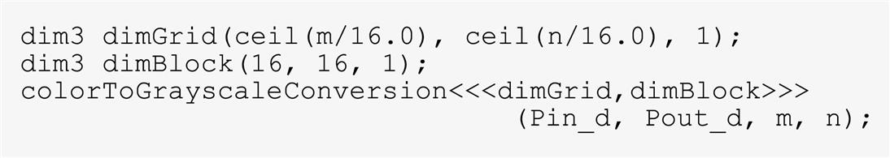
In this example we assume for simplicity that the dimensions of the blocks are fixed at 16×16. The dimensions of the grid, on the other hand, depend on the dimensions of the picture. To process a 1500×2000 (3-million-pixel) picture, we would generate 11,750 blocks: 94 in the y direction and 125 in the x direction. Within the kernel function, references to gridDim.x, gridDim.y, blockDim.x, and blockDim.y will result in 125, 94, 16, and 16, respectively.
Before we show the kernel code, we first need to understand how C statements access elements of dynamically allocated multidimensional arrays. Ideally, we would like to access Pin_d as a 2D array in which an element at row j and column i can be accessed as Pin_d[j][i]. However, the ANSI C standard on the basis of which CUDA C was developed requires the number of columns in Pin to be known at compile time for Pin to be accessed as a 2D array. Unfortunately, this information is not known at compile time for dynamically allocated arrays. In fact, part of the reason why one uses dynamically allocated arrays is to allow the sizes and dimensions of these arrays to vary according to the data size at runtime. Thus the information on the number of columns in a dynamically allocated 2D array is not known at compile time by design. As a result, programmers need to explicitly linearize, or “flatten,” a dynamically allocated 2D array into an equivalent 1D array in the current CUDA C.
In reality, all multidimensional arrays in C are linearized. This is due to the use of a “flat” memory space in modern computers (see the “Memory Space” sidebar). In the case of statically allocated arrays, the compilers allow the programmers to use higher-dimensional indexing syntax, such as Pin_d[j][i], to access their elements. Under the hood, the compiler linearizes them into an equivalent 1D array and translates the multidimensional indexing syntax into a 1D offset. In the case of dynamically allocated arrays, the current CUDA C compiler leaves the work of such translation to the programmers, owing to lack of dimensional information at compile time.
There are at least two ways in which a 2D array can be linearized. One is to place all elements of the same row into consecutive locations. The rows are then placed one after another into the memory space. This arrangement, called the row-major layout, is illustrated in Fig. 3.3. To improve readability, we use Mj,i to denote an element of M at the jth row and the ith column. Mj,i is equivalent to the C expression M[j][i] but slightly more readable. Fig. 3.3 shows an example in which a 4×4 matrix M is linearized into a 16-element 1D array, with all elements of row 0 first, followed by the four elements of row 1, and so on. Therefore the 1D equivalent index for an element of M at row j and column i is j*4+i. The j*4 term skips over all elements of the rows before row j. The i term then selects the right element within the section for row j. For example, the 1D index for M2,1 is 2*4+1=9. This is illustrated in Fig. 3.3, in which M9 is the 1D equivalent to M2,1. This is the way in which C compilers linearize 2D arrays.
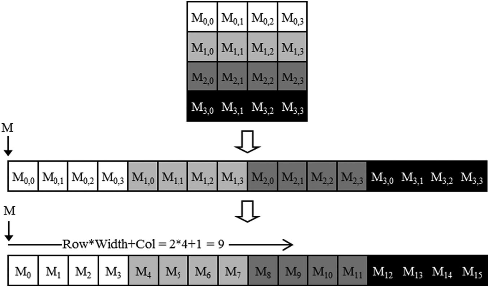
Another way to linearize a 2D array is to place all elements of the same column in consecutive locations. The columns are then placed one after another into the memory space. This arrangement, called the column-major layout, is used by FORTRAN compilers. Note that the column-major layout of a 2D array is equivalent to the row-major layout of its transposed form. We will not spend more time on this except to mention that readers whose primary previous programming experience was with FORTRAN should be aware that CUDA C uses the row-major layout rather than the column-major layout. Also, many C libraries that are designed to be used by FORTRAN programs use the column-major layout to match the FORTRAN compiler layout. As a result, the manual pages for these libraries usually tell the users to transpose the input arrays if they call these libraries from C programs.
We are now ready to study the source code of colorToGrayscaleConversion, shown in Fig. 3.4. The kernel code uses the following equation to convert each color pixel to its grayscale counterpart:
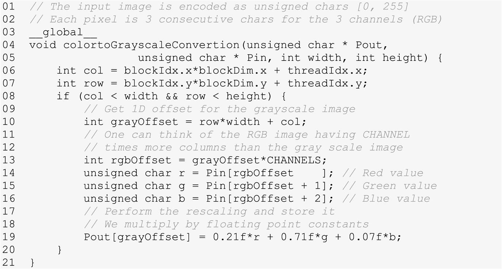
There are a total of blockDim.x*gridDim.x threads in the horizontal direction. Similar to the vecAddKernel example, the following expression generates every integer value from 0 to blockDim.x*gridDim.x–1 (line 06):
We know that gridDim.x*blockDim.x is greater than or equal to width (m value passed in from the host code). We have at least as many threads as the number of pixels in the horizontal direction. We also know that there are at least as many threads as the number of pixels in the vertical direction. Therefore as long as we test and make sure that only the threads with both row and column values are within range, that is, (col<width) && (row<height), we will be able to cover every pixel in the picture (line 07).
Since there are width pixels in each row, we can generate the 1D index for the pixel at row row and column col as row*width+col (line 10). This 1D index grayOffset is the pixel index for Pout since each pixel in the output grayscale image is 1 byte (unsigned char). Using our 62×76 image example, the linearized 1D index of the Pout pixel calculated by thread (0,0) of block (1,0) with the following formula:
As for Pin, we need to multiply the gray pixel index by 32F2F3 (line 13), since each colored pixel is stored as three elements (r, g, b), each of which is 1 byte. The resulting rgbOffset gives the starting location of the color pixel in the Pin array. We read the r, g, and b value from the three consecutive byte locations of the Pin array (lines 14–16), perform the calculation of the grayscale pixel value, and write that value into the Pout array using grayOffset (line 19). In our 62×76 image example the linearized 1D index of the first component of the Pin pixel that is processed by thread (0,0) of block (1,0) can be calculated with the following formula:
The data that is being accessed is the 3 bytes starting at byte offset 3648.
Fig. 3.5 illustrates the execution of colorToGrayscaleConversion in processing our 62×76 example. Assuming 16×16 blocks, calling the colorToGrayscaleConversion kernel generates 64×80 threads. The grid will have 4×5=20 blocks: four in the vertical direction and five in the horizontal direction. The execution behavior of blocks will fall into one of four different cases, shown as four shaded areas in Fig. 3.5.
The first area, marked 1 in Fig. 3.5, consists of the threads that belong to the 12 blocks covering the majority of pixels in the picture. Both col and row values of these threads are within range; all these threads pass the if-statement test and process pixels in the dark-shaded area of the picture. That is all 16×16=256 threads in each block will process pixels.
The second area, marked 2 in Fig. 3.5, contains the threads that belong to the three blocks in the medium-shaded area covering the upper-right pixels of the picture. Although the row values of these threads are always within range, the col values of some of them exceed the m value of 76. This is because the number of threads in the horizontal direction is always a multiple of the blockDim.x value chosen by the programmer (16 in this case). The smallest multiple of 16 needed to cover 76 pixels is 80. As a result, 12 threads in each row will find their col values within range and will process pixels. The remaining four threads in each row will find their col values out of range and thus will fail the if-statement condition. These threads will not process any pixels. Overall, 12×16=192 of the 16×16=256 threads in each of these blocks will process pixels.
The third area, marked 3 in Fig. 3.5, accounts for the four lower-left blocks covering the medium-shaded area of the picture. Although the col values of these threads are always within range, the row values of some of them exceed the n value of 62. This is because the number of threads in the vertical direction is always a multiple of the blockDim.y value chosen by the programmer (16 in this case). The smallest multiple of 16 to cover 62 is 64. As a result, 14 threads in each column will find their row values within range and will process pixels. The remaining two threads in each column will not pas the if-statement and will not process any pixels. Overall, 16×14=224 of the 256 threads will process pixels.
The fourth area, marked 4 in Fig. 3.5, contains the threads that cover the lower right, lightly shaded area of the picture. Like Area 2, 4 threads in each of the top 14 rows will find their col values out of range. Like Area 3, the entire bottom two rows of this block will find their row values out of range. Overall, only 14×12=168 of the 16×16=256 threads will process pixels.
We can easily extend our discussion of 2D arrays to 3D arrays by including another dimension when we linearize the array. This is done by placing each “plane” of the array one after another into the address space. Assume that the programmer uses variables m and n to track the number of columns and rows, respectively, in a 3D array. The programmer also needs to determine the values of blockDim.z and gridDim.z when calling a kernel. In the kernel the array index will involve another global index:
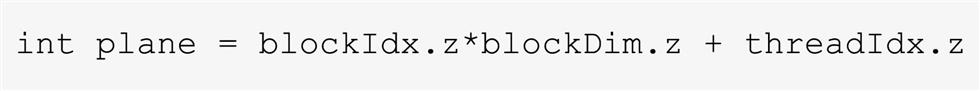
The linearized access to a 3D array P will be in the form of P[plane*m*n+row*m+col]. A kernel processing the 3D P array needs to check whether all the three global indices, plane, row, and col, fall within the valid range of the array. The use of 3D arrays in CUDA kernels will be further studies for the stencil pattern in Chapter 8, Stencil.
We have studied vecAddkernel and colorToGrayscaleConversion, in which each thread performs only a small number of arithmetic operations on one array element. These kernels serve their purposes well: to illustrate the basic CUDA C program structure and data parallel execution concepts. At this point, the reader should ask the obvious question: Do all threads in CUDA C programs perform only such simple and trivial operations independently of each other? The answer is no. In real CUDA C programs, threads often perform complex operations on their data and need to cooperate with each other. For the next few chapters we are going to work on increasingly complex examples that exhibit these characteristics. We will start with an image-blurring function.
Image blurring smoothes out abrupt variation of pixel values while preserving the edges that are essential for recognizing the key features of the image. Fig. 3.6 illustrates the effect of image blurring. Simply stated, we make the image blurry. To human eyes, a blurred image tends to obscure the fine details and present the “big picture” impression, or the major thematic objects in the picture. In computer image-processing algorithms a common use case of image blurring is to reduce the impact of noise and granular rendering effects in an image by correcting problematic pixel values with the clean surrounding pixel values. In computer vision, image blurring can be used to allow edge detection and object recognition algorithms to focus on thematic objects rather than being bogged down by a massive quantity of fine-grained objects. In displays, image blurring is sometimes used to highlight a particular part of the image by blurring the rest of the image.
Mathematically, an image-blurring function calculates the value of an output image pixel as a weighted sum of a patch of pixels encompassing the pixel in the input image. As we will learn in Chapter 7, Convolution, the computation of such weighted sums belongs to the convolution pattern. We will be using a simplified approach in this chapter by taking a simple average value of the N×N patch of pixels surrounding, and including, our target pixel. To keep the algorithm simple, we will not place a weight on the value of any pixel based on its distance from the target pixel. In practice, placing such weights is quite common in convolution blurring approaches, such as Gaussian blur.
Fig. 3.7 shows an example of image blurring using a 3×3 patch. When calculating an output pixel value at (row, col) position, we see that the patch is centered at the input pixel located at the (row, col) position. The 3×3 patch spans three rows (row-1, row, row+1) and three columns (col-1, col, col+1). For example, the coordinates of the nine pixels for calculating the output pixel at (25, 50) are (24, 49), (24, 50), (24, 51), (25, 49), (25, 50), (25, 51), (26, 49), (26, 50), and (26, 51).
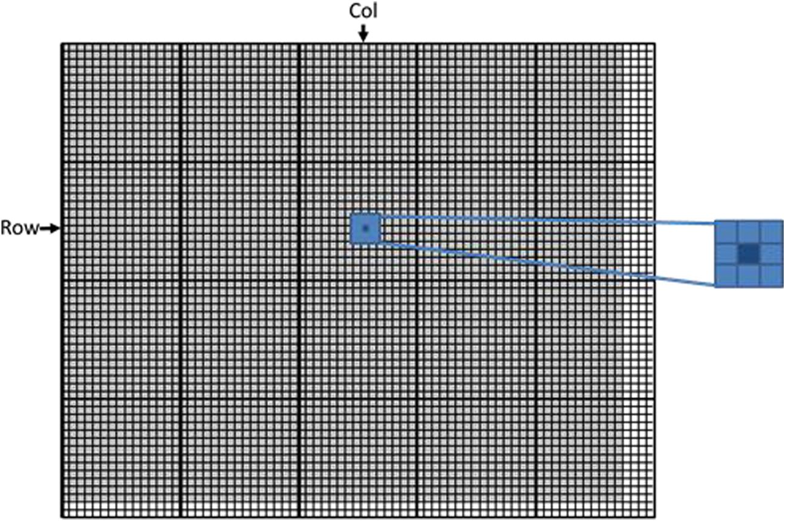
Fig. 3.8 shows an image blur kernel. Similar to the strategy that was used in colorToGrayscaleConversion, we use each thread to calculate an output pixel. That is, the thread-to-output-data mapping remains the same. Thus at the beginning of the kernel we see the familiar calculation of the col and row indices (lines 03–04). We also see the familiar if-statement that verifies that both col and row are within the valid range according to the height and width of the image (line 05). Only the threads whose col and row indices are both within value ranges are allowed to participate in the execution.
As shown in Fig. 3.7, the col and row values also give the central pixel location of the patch of input pixels used for calculating the output pixel for the thread. The nested for-loops in Fig. 3.8 (lines 10–11) iterate through all the pixels in the patch. We assume that the program has a defined constant BLUR_SIZE. The value of BLUR_SIZE is set such that BLUR_SIZE gives the number of pixels on each side (radius) of the patch and 2*BLUR_SIZE+1 gives the total number of pixels across one dimension of the patch. For example, for a 3×3 patch, BLUR_SIZE is set to 1, whereas for a 7×7 patch, BLUR_SIZE is set to 3. The outer loop iterates through the rows of the patch. For each row, the inner loop iterates through the columns of the patch.
In our 3×3 patch example, the BLUR_SIZE is 1. For the thread that calculates output pixel (25, 50), during the first iteration of the outer loop, the curRow variable is row-BLUR_SIZE=(25−1)=24. Thus during the first iteration of the outer loop, the inner loop iterates through the patch pixels in row 24. The inner loop iterates from column col-BLUR_SIZE=50–1=49 to col+BLUR_SIZE=51 using the curCol variable. Therefore the pixels that are processed in the first iteration of the outer loop are (24, 49), (24, 50), and (24, 51). The reader should verify that in the second iteration of the outer loop, the inner loop iterates through pixels (25, 49), (25, 50), and (25, 51). Finally, in the third iteration of the outer loop, the inner loop iterates through pixels (26, 49), (26, 50), and (26, 51).
Line 16 uses the linearized index of curRow and curCol to access the value of the input pixel visited in the current iteration. It accumulates the pixel value into a running sum variable pixVal. Line 17 records the fact that one more pixel value has been added into the running sum by incrementing the pixels variable. After all the pixels in the patch have been processed, line 22 calculates the average value of the pixels in the patch by dividing the pixVal value by the pixels value. It uses the linearized index of row and col to write the result into its output pixel.
Line 15 contains a conditional statement that guards the execution of lines 16 and 17. For example, in computing output pixels near the edge of the image, the patch may extend beyond the valid range of the input image. This is illustrated in Fig. 3.9 assuming 3×3 patches. In case 1, the pixel at the upper-left corner is being blurred. Five of the nine pixels in the intended patch do not exist in the input image. In this case, the row and col values of the output pixel are 0 and 0, respectively. During the execution of the nested loop, the curRow and curCol values for the nine iterations are (−1,−1), (−1,0), (−1,1), (0,−1), (0,0), (0,1), (1,−1), (1,0), and (1,1). Note that for the five pixels that are outside the image, at least one of the values is less than 0. The curRow<0 and curCol<0 conditions of the if-statement catch these values and skip the execution of lines 16 and 17. As a result, only the values of the four valid pixels are accumulated into the running sum variable. The pixels value is also correctly incremented only four times so that the average can be calculated properly at line 22.
The reader should work through the other cases in Fig. 3.9 and analyze the execution behavior of the nested loop in blurKernel. Note that most of the threads will find all the pixels in their assigned 3×3 patch within the input image. They will accumulate all the nine pixels. However, for the pixels on the four corners, the responsible threads will accumulate only four pixels. For other pixels on the four edges, the responsible threads will accumulate six pixels. These variations are what necessitates keeping track of the actual number of pixels that are accumulated with the variable pixels.
Matrix-matrix multiplication, or matrix multiplication in short, is an important component of the Basic Linear Algebra Subprograms standard (see the “Linear Algebra Functions” sidebar). It is the basis of many linear algebra solvers, such as LU decomposition. It is also an important computation for deep learning using convolutional neural networks, which will be discussed in detail in Chapter 16, Deep Learning.
Matrix multiplication between an I×j (i rows by j columns) matrix M and a j×k matrix N produces an I×k matrix P. When a matrix multiplication is performed, each element of the output matrix P is an inner product of a row of M and a column of N. We will continue to use the convention where Prow, col is the element at the rowth position in the vertical direction and the colth position in the horizontal direction. As shown in Fig. 3.10, Prow,col (the small square in P) is the inner product of the vector formed by the rowth row of M (shown as a horizontal strip in M) and the vector formed by the colth column of N (shown as a vertical strip in N). The inner product, sometimes called the dot product, of two vectors is the sum of products of the individual vector elements. That is,
For example, in Fig. 3.10, assuming row=1 and col=5,
To implement matrix multiplication using CUDA, we can map the threads in the grid to the elements of the output matrix P with the same approach that we used for colorToGrayscaleConversion. That is, each thread is responsible for calculating one P element. The row and column indices for the P element to be calculated by each thread are the same as before:
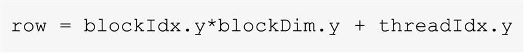
and
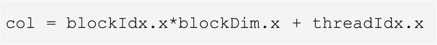
With this one-to-one mapping, the row and col thread indices are also the row and column indices for their output elements. Fig. 3.11 shows the source code of the kernel based on this thread-to-data mapping. The reader should immediately see the familiar pattern of calculating row and col (lines 03–04) and the if-statement testing if row and col are both within range (line 05). These statements are almost identical to their counterparts in colorToGrayscaleConversion. The only significant difference is that we are making a simplifying assumption that matrixMulKernel needs to handle only square matrices, so we replace both width and height with Width. This thread-to-data mapping effectively divides P into tiles, one of which is shown as a light-colored square in Fig. 3.10. Each block is responsible for calculating one of these tiles.
We now turn our attention to the work done by each thread. Recall that Prow,col is calculated as the inner product of the rowth row of M and the colth column of N. In Fig. 3.11 we use a for-loop to perform this inner product operation. Before we enter the loop, we initialize a local variable Pvalue to 0 (line 06). Each iteration of the loop accesses an element from the rowth row of M and an element from the colth column of N, multiplies the two elements together, and accumulates the product into Pvalue (line 08).
Let us first focus on accessing the M element within the for-loop. M is linearized into an equivalent 1D array using row-major order. That is, the rows of M are placed one after another in the memory space, starting with the 0th row. Therefore the beginning element of row 1 is M[1*Width] because we need to account for all elements of row 0. In general, the beginning element of the rowth row is M[row*Width]. Since all elements of a row are placed in consecutive locations, the kth element of the rowth row is at M[row*Width+k]. This linearized array offset is what we use in Fig. 3.11 (line 08).
We now turn our attention to accessing N. As is shown in Fig. 3.11, the beginning element of the colth column is the colth element of row 0, which is N[col]. Accessing the next element in the colth column requires skipping over an entire row. This is because the next element of the same column is the same element in the next row. Therefore the kth element of the colth column is N[k*Width+col] (line 08).
After the execution exits the for-loop, all threads have their P element values in the Pvalue variables. Each thread then uses the 1D equivalent index expression row*Width+col to write its P element (line 10). Again, this index pattern is like that used in the colorToGrayscaleConversion kernel.
wWe now use a small example to illustrate the execution of the matrix multiplication kernel. Fig. 3.12 shows a 4×4 P with BLOCK_WIDTH=2. Although such small matrix and block sizes are not realistic, they allow us to fit the entire example into one picture. The P matrix is divided into four tiles, and each block calculates one tile. We do so by creating blocks that are 2×2 arrays of threads, with each thread calculating one P element. In the example, thread (0,0) of block (0,0) calculates P0,0, whereas thread (0,0) of block (1,0) calculates P2,0.
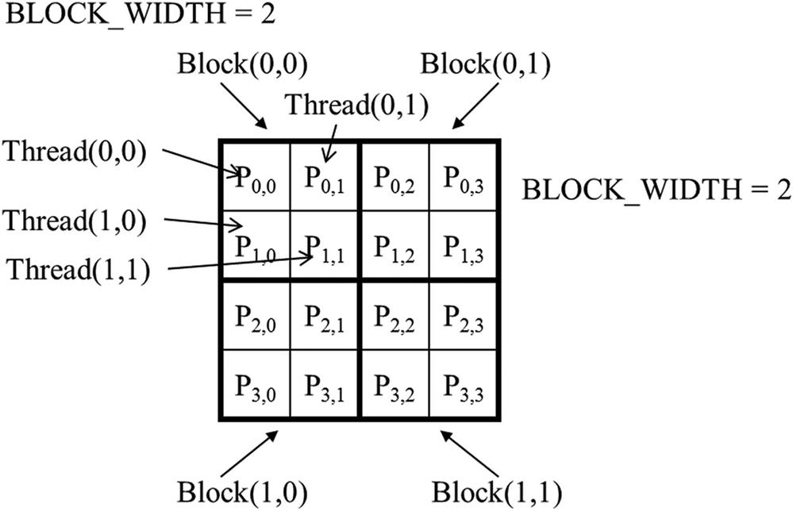
The row and col indices in matrixMulKernel identify the P element to be calculated by a thread. The row index also identifies the row of M, and the col index identifies the column of N as input values for the thread. Fig. 3.13 illustrates the multiplication actions in each thread block. For the small matrix multiplication example, threads in block (0,0) produce four dot products. The row and col indices of thread (1,0) in block (0,0) are 0*0+1=1 and 0*0+0=0, respectively. The thread thus maps to P1,0 and calculates the dot product of row 1 of M and column 0 of N.
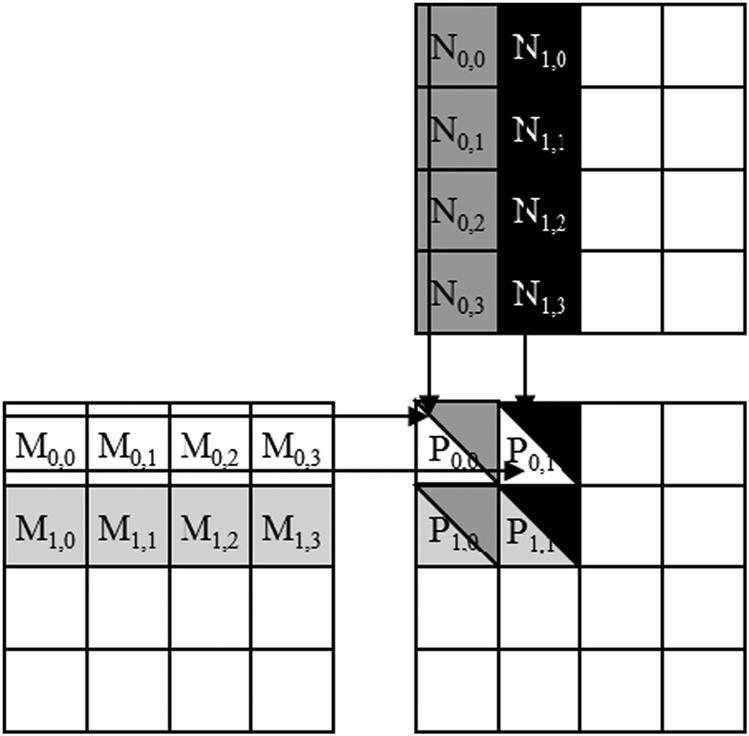
Let us walk through the execution of the for-loop of Fig. 3.11 for thread (0,0) in block (0,0). During iteration 0 (k=0), row*Width+k=0*4+0=0 and k*Width+col=0*4+0=0. Therefore the input elements accessed are M[0] and N[0], which are the 1D equivalent of M0,0 and N0,0. Note that these are indeed the 0th elements of row 0 of M and column 0 of N. During iteration 1 (k=1), row*Width+k=0*4+1=1 and k*Width+col=1*4+0=4. Therefore we are accessing M[1] and N[4], which are the 1D equivalent of M0,1 and N1,0. These are the first elements of row 0 of M and column 0 of N. During iteration 2 (k=2), row*Width+k=0*4+2=2 and k*Width+col=2*4+0=8, which results in M[2] and N[8]. Therefore the elements accessed are the 1D equivalent of M0,2 and N2,0. Finally, during iteration 3 (k=3), row*Width+k=0*4+3=3 and k*Width+col= 3*4+0=12, which results in M[3] and N[12], the 1D equivalent of M0,3 and N3,0. We have now verified that the for-loop performs the inner product between the 0th row of M and the 0th column of N for thread (0,0) in block (0,0). After the loop, the thread writes P[row*Width+col], which is P[0]. This is the 1D equivalent of P0,0, so thread (0,0) in block (0,0) successfully calculated the inner product between the 0th row of M and the 0th column of N and deposited the result in P0,0.
We will leave it as an exercise for the reader to hand-execute and verify the for-loop for other threads in block (0,0) or in other blocks.
Since the size of a grid is limited by the maximum number of blocks per grid and threads per block, the size of the largest output matrix P that can be handled by matrixMulKernel will also be limited by these constraints. In the situation in which output matrices larger than this limit are to be computed, one can divide the output matrix into submatrices whose sizes can be covered by a grid and use the host code to launch a different grid for each submatrix. Alternatively, we can change the kernel code so that each thread calculates more P elements. We will explore both options later in this book.
CUDA grids and blocks are multidimensional with up to three dimensions. The multidimensionality of grids and blocks is useful for organizing threads to be mapped to multidimensional data. The kernel execution configuration parameters define the dimensions of a grid and its blocks. Unique coordinates in blockIdx and threadIdx allow threads of a grid to identify themselves and their domains of data. It is the programmer’s responsibility to use these variables in kernel functions so that the threads can properly identify the portion of the data to process. When accessing multidimensional data, programmers will often have to linearize multidimensional indices into a 1D offset. The reason is that dynamically allocated multidimensional arrays in C are typically stored as 1D arrays in row-major order. We use examples of increasing complexity to familiarize the reader with the mechanics of processing multidimensional arrays with multidimensional grids. These skills will be foundational for understanding parallel patterns and their associated optimization techniques.
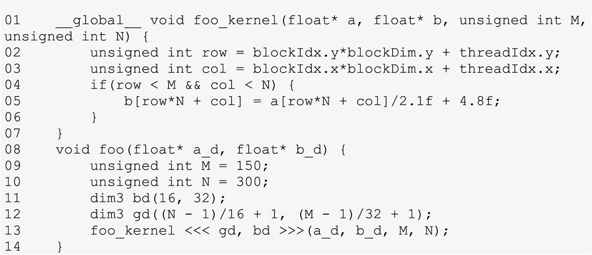